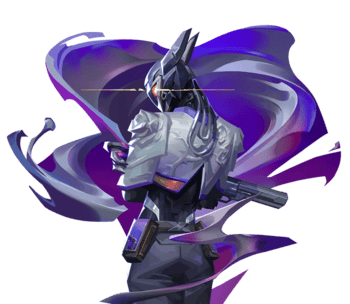

Portfolio - Medina
Home
Prazer, sou o Medina!
Desenvolvedor com visão de produto, atenção ao detalhe e paixão por sistemas bem pensados.
About me
Ser um desenvolvedor é mais do que saber programar - é saber onde procurar, como transformar dúvidas ou ideias em soluções e como adaptar cada código ao meu próprio estilo.
"Todo o arsenal é meu."
— Vyse, Valorant.
E de fato, é: meu único limite sou eu mesmo e, ao reconhecer isso, me mantenho preparado para o próximo desafio.
Sou apaixonado por aprender, experimentar coisas novas e estar à frente do que ainda está surgindo - mas não se engane porque, por trás dessa personalidade que anseia por novidade, há também o prazer por lugares e pessoas que me são familiares e, claro, simples prazeres do dia a dia (como ouvir música!).
keyboard_arrow_downHard skills
Linguagens
Java
HTML & CSS
SQL
JavaScript
Python
C#
Frameworks
Spring
React
Ferramentas
Adobe Creative Cloud
Figma
Gradle
Git & Github
Soft skills
Comportamental
- Aprendizado autodidata
- Organização
- Resolução de problemas
- Trabalho em equipe
- Pensamento lógico
- Comunicação clara
- Proatividade
- Empatia
Idiomas
Italiano
Nativo
Português
Nativo
Inglês
Intermediário - B2
Espanhol
Básico
Vivência Internacional
Residência
Belluno, Veneto, Itália (2018 à 2020).
Creations
Create: Santa Lucia
Em busca de consolidar meus conhecimentos de Java e adentrar no mundo do Gradle e do Minecraft, criei um add-on do famoso mod Create, chamado Create: Santa Lucia.
O objetivo era simples: fazer um mod que atendesse ao mundo modificado de um servidor de Minecraft, tornasse receitas viáveis, fosse compatível com mecânicas do Create e, claro, fizesse adição de itens que viabilizassem a história da ilha de Santa Lucia (daí o nome para o mod).
Foi um grande desafio que me inseriu ao trabalho em equipe na programação, além de, claro, pós-concluído, trazer grande satisfação - tanto para mim como desenvolvedor como à comunidade.
Portfolio
Para mostrar ao mundo do que sou capaz, meu segundo projeto foi este que você vê: meu portfolio.
Além de demonstrar meus conhecimentos em HTML, CSS e um pouco de JavaScript (uma vez que o projeto foi feito usando essas linguagens "cruas"), demonstro também a imagem que quero passar para o mundo: atento aos conceitos da atualidade (liquid glass/glassmorphism/flat), eficiência (uma vez que apliquei de forma ágil o design responsivo com flexbox e grid para construir o projeto em uma semana), e, por fim, para construir minha identidade como desenvolvedor - mostrando que a paixão por sistemas bem pensados no back-end se reflete em um front-end igualmente cuidadoso e moderno.
O que vem no horizonte?
Atualmente, venho aprofundando meus estudos mais em C#, SQL, JavaScript e nos frameworks Spring e React. Essa decisão abrange tanto meu interesse no desenvolvimento produtivo quanto meus interesses pessoais em desenvolver para jogos.
Além do mod Create: Santa Lucia, penso em um novo projeto mais ambicioso, mas, meu horizonte é ainda mais amplo: estou estudando um pouco a comunidade online de outros jogos, como GTA V e Read Dead Redemption II, afim de entender as possibilidades de desenvolvimento dentro dessas plataformas.
Meu objetivo final é claro: evoluir como desenvolvedor até o ponto de transformar qualquer ideia, por mais complexa que seja, em algo funcional, real, eficiente e de imensa qualidade.